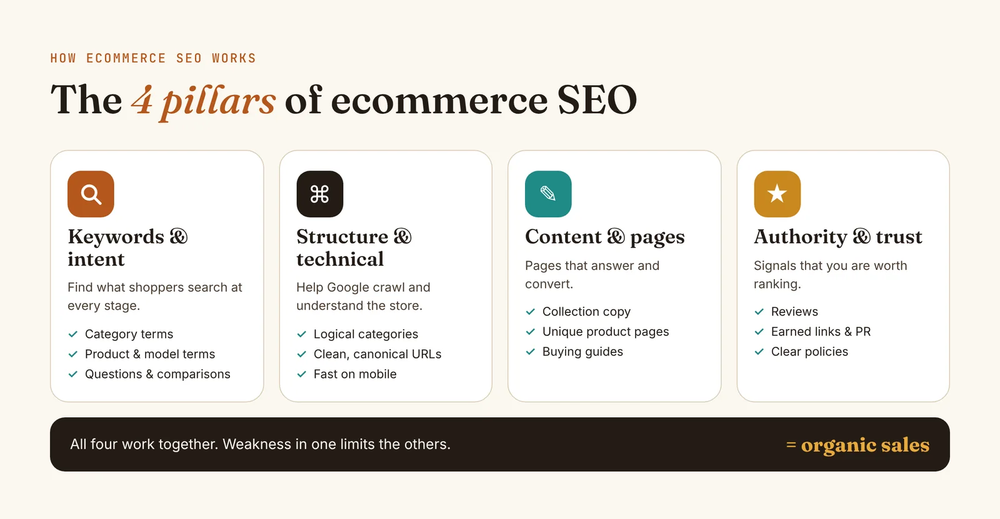
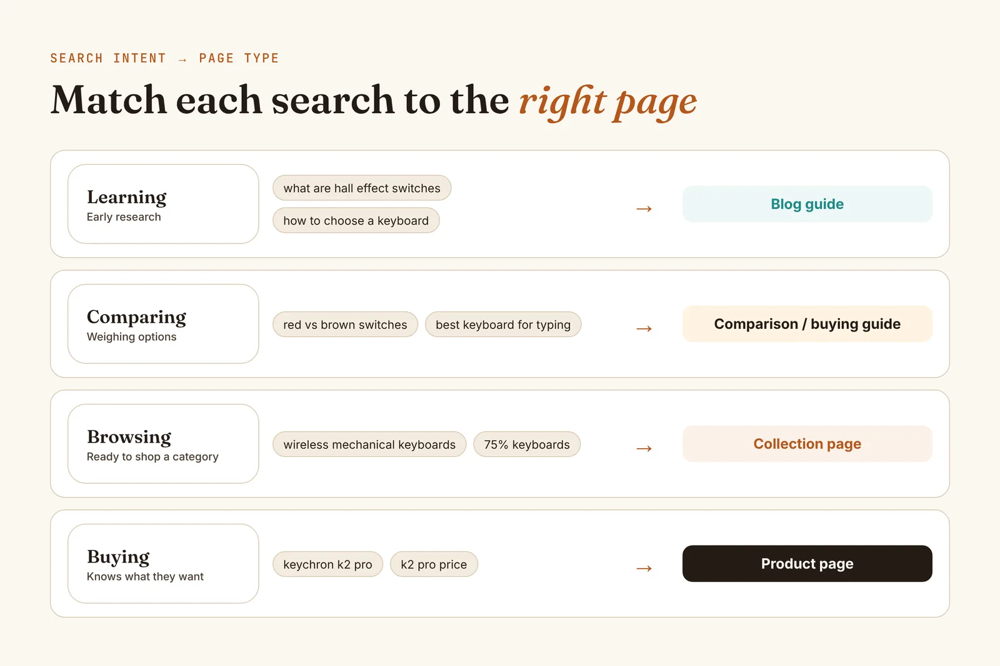
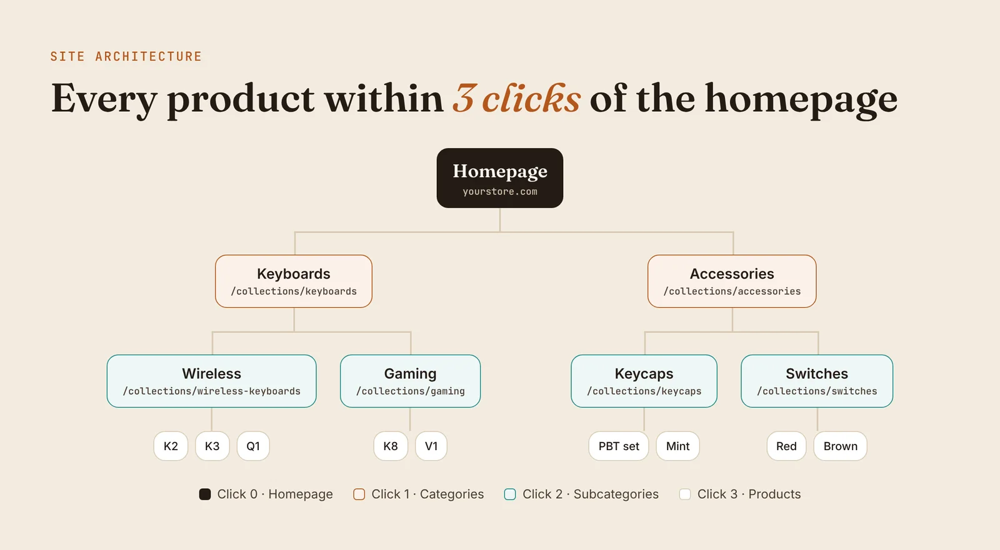
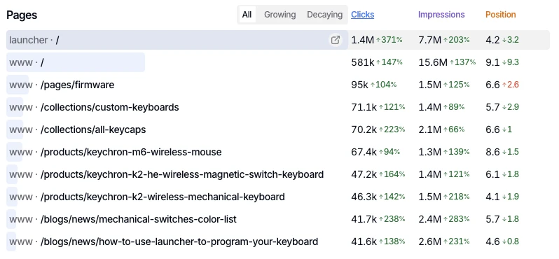

- Ecommerce SEO is optimizing an online store so its category, product and content pages rank on Google for shopping searches.
- It differs from regular SEO because stores have thousands of similar pages, filters that create duplicate URLs, and products that change often.
- It rests on four pillars: keywords and intent, structure and technical health, content and pages, and authority and trust.
- Start with category pages and site structure, then product pages, then buying guides that answer shoppers' questions.
Ecommerce SEO is how online stores get found on Google without paying for every click. When a shopper searches "wireless mechanical keyboards" or "best baby carrier for newborns", the stores on the first page are capturing buyers at the exact moment they're ready to compare and purchase.
In this guide, I'll explain what it means in plain language, how it differs from SEO for a regular website, and the nine practices I use on client stores, with real results from Keychron and a baby-care brand.
What is Ecommerce SEO?
Answer: Ecommerce SEO is the process of optimizing an online store's category pages, product pages, content and technical setup so they rank higher in search engines for shopping-related searches, bringing in qualified visitors without paying for ads.
It covers every type of page a store has:
| Page type | What it ranks for | Example search |
|---|---|---|
| Homepage | Your brand name and main category | keychron |
| Category / collection | Broad shopping searches | wireless mechanical keyboards |
| Product page | Specific models and variants | keychron k2 pro |
| Buying guide / blog | Questions and comparisons | red vs brown switches |
| Tool page | Calculators and finders | baby percentile calculator |
How it differs from regular SEO
The fundamentals are the same, but online stores face problems that blogs and service websites rarely do:
| Challenge | Typical website | Online store |
|---|---|---|
| Number of pages | Dozens | Hundreds to thousands of products and categories |
| Duplicate content | Rare | Similar products, variants and copied supplier descriptions |
| Filters | None | Size, color and price filters create many near-identical URLs |
| Changing inventory | Content stays put | Products sell out, change price or get discontinued |
| Search intent | Mostly informational | Mostly commercial and transactional |
| Structured data | Article, Organization | Product, price, availability, reviews |
Why it matters for online stores
- It compounds. Paid ads stop the moment your budget runs out. A category page that ranks well keeps sending shoppers month after month.
- It lowers acquisition costs. Every organic visit is one you didn't pay a click for, which matters most for small stores with tight margins.
- It reaches shoppers earlier. Buying guides and comparisons put your brand in front of people while they're still deciding, not just when they're ready to buy.
- It shows you what customers want. Search Console reveals the exact words shoppers use, which helps with product naming, merchandising and new collections.
- It feeds AI search. Google's AI Overviews pull from pages that already rank and answer questions clearly, so strong SEO also earns those citations.
How it works: the 4 pillars

- Keywords and intent: knowing what shoppers search for at each stage, from "how to choose" to the exact model name.
- Structure and technical health: a logical category tree, clean URLs, fast pages and no crawl traps, so Google can find and understand every product.
- Content and pages: helpful category copy, unique product descriptions and buying guides that answer real questions.
- Authority and trust: reviews, earned links and clear store policies that show Google and shoppers you're legitimate.
Ecommerce SEO best practices: 9 steps that work
1. Research keywords by search intent
Group keywords by what the shopper wants to do, then give each group the right type of page. Product-grid results on Google mean a collection page; article results mean a guide.

2. Build a simple, shallow site structure
Organize the store as Homepage → Categories → Subcategories → Products, so every product is reachable within about three clicks. Use clear, keyword-based URLs like /collections/wireless-keyboards and turn on breadcrumbs.

3. Optimize category and collection pages first
Category pages target the broad, high-volume searches with the most buying intent. Give each one a keyword-led title and H1, a one-to-two sentence intro above the products, and a buying guide with an FAQ below them. My collection page SEO guide walks through it with a template.
4. Write unique product pages
- Replace supplier descriptions with your own: who it's for, how it compares, what's in the box.
- Use clear titles: brand + product type + key feature.
- Add descriptive alt text to every image and show real reviews on the page.
- When a product is discontinued, redirect it to the closest alternative or its category instead of leaving a dead page.
5. Control duplicate and filtered URLs
Filters for size, color and price can create thousands of URLs that show almost the same products. Google's guidance on faceted navigation recommends preventing these from being crawled if you don't need them in search (Google Search Central). Use canonical tags on product variants and keep only valuable filter pages, like "black running shoes", indexable as proper collections.
6. Add product structured data
Structured data tells Google a product's name, price, availability and rating, which can unlock richer search results with stars and prices (Google product structured data). Most Shopify themes include basic Product markup. Test a product URL in Google's Rich Results Test and add BreadcrumbList markup if it's missing.
7. Make the store fast and mobile-friendly
Aim for Google's "good" Core Web Vitals thresholds: Largest Contentful Paint within 2.5 seconds, Interaction to Next Paint under 200 milliseconds, and Cumulative Layout Shift under 0.1 (web.dev). In practice: compress images, remove apps you don't use, and test key pages in PageSpeed Insights on mobile.
8. Publish buying guides that answer questions
Comparisons, "best for" articles and how-to-choose guides capture shoppers before they decide, and they're the pages most often cited in Google's AI Overviews. Answer each question in the first sentence or two, then link to the matching collection. See AI Overview SEO for e-commerce for the full approach.
9. Earn authority and trust
- Collect and display genuine product reviews.
- Create content worth linking to: original data, tools, calculators and genuinely useful guides.
- Pitch your best content to industry publications and roundups.
- Keep About, Contact, Shipping and Returns pages clear and easy to find.
For example, a Keychron guide I wrote was featured by Backlinko as an example of a great Ecommerce blog, a link no ad budget could buy.
Want the step-by-step version? My e-commerce SEO checklist for Shopify stores turns these practices into a checklist you can work through page by page.
Metrics to track
| Metric | Where to find it | What it tells you |
|---|---|---|
| Indexed pages | Search Console → Pages | Whether Google can see your products and categories |
| Impressions & clicks | Search Console → Performance | How often you appear and how often people click |
| Average position | Search Console → Performance | Which pages are close to page one |
| Click-through rate | Search Console → Performance | Whether titles and descriptions earn the click |
| Organic revenue | GA4 or Shopify Analytics | Whether SEO traffic actually buys |
Tools you'll need
- Google Search Console (free): indexing, queries, clicks and positions.
- Google Analytics 4 (free): what organic visitors do and buy.
- PageSpeed Insights (free): Core Web Vitals for any page.
- Google Merchant Center (free): product feeds for Shopping results.
- Ahrefs or Semrush (paid): keyword research, competitor gaps and backlinks.
- Screaming Frog (free up to 500 URLs): crawls your store to find broken links, duplicates and missing tags.
Real results from client stores

A content cluster around switch questions made the Keychron guide the top organic result for "mechanical keyboard color switches", cited in the AI Overview and People Also Ask, with impressions up to +2,264% across the group.

The mechanical switches color list guide alone earned 41.7K clicks (+238%) and 2.4M impressions (+283%) at an average position of 5.7, ranking alongside Keychron's top collection and product pages in Search Console.
Common mistakes to avoid
- Using supplier descriptions word for word across hundreds of products.
- Leaving category pages with only a heading and a product grid.
- Letting filter and sort URLs get indexed by the thousand.
- Deleting sold-out products without a redirect.
- Blogging about general news instead of shoppers' real questions.
- Installing many SEO and marketing apps that slow the store down.
- Judging SEO after two weeks instead of three to six months.
Frequently asked questions
Is Ecommerce SEO worth it for a small store?
Yes, especially for small stores with limited ad budgets. Organic rankings keep bringing visitors without paying for each click, and well-optimized category and product pages keep working long after they are published.
How long does Ecommerce SEO take to work?
Most stores see impressions grow within 4 to 8 weeks and stronger ranking and traffic gains within 3 to 6 months, depending on competition and how established the site is.
What is the difference between Ecommerce SEO and PPC?
PPC (pay-per-click) ads buy visibility immediately, but traffic stops when you stop paying. Ecommerce SEO earns organic rankings that take longer to build but keep sending traffic without a cost per click. Most stores do best with both.
Which pages matter most in Ecommerce SEO?
Category or collection pages usually matter most, because they target broad shopping searches with high intent. Product pages capture searches for specific models, and buying guides capture shoppers who are still researching.
Conclusion
Ecommerce SEO is the long game that pays an online store back every month: the right keyword on the right page, a structure Google can crawl, unique and helpful pages, and the trust signals that earn rankings. Start with your most important category pages and your site structure, fix duplicate URLs, then build product pages and buying guides around the questions your shoppers actually ask. Track the results in Search Console, and give it three to six months to compound.
Sources: Google, Managing crawling of faceted navigation URLs · Google, Product structured data · web.dev, Web Vitals

Annalyn Bernaldo
Annalyn is an e-commerce SEO specialist in the Philippines who has been doing SEO and content writing since 2019. Her store content ranks #1 on Google and gets cited in AI Overviews, and her Keychron article was featured by Backlinko.